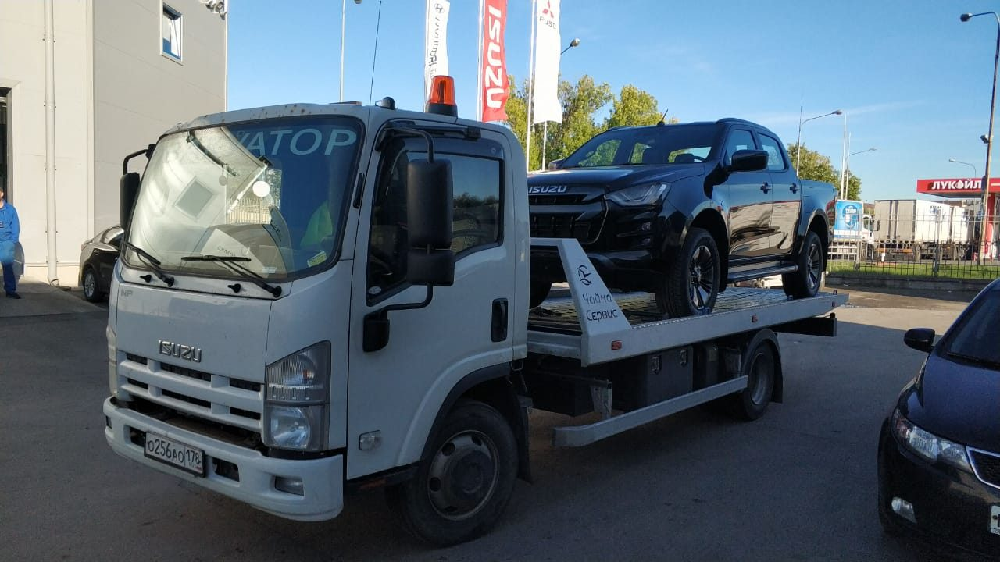

Цены на эвакуатор в Санкт-Петербурге
Эвакуатор со сдвижной платформой стоит от 3 500 ₽ за подачу, погрузку и разгрузку + от 80 ₽/км, манипулятор от 8 000 ₽ + 100 ₽/км. Стоимость называем до выезда, и если на месте всё как вы описали, она не меняется.
- Работаем 24/7
- Подача по СПб 20–40 мин
- Цена до выезда
Диспетчер ответит круглосуточно и назовёт стоимость до выезда.
Сложный случай? Пришлите фото, оценим стоимость: WhatsApp · Telegram · Max

Тарифы
Пример: легковая машина с заблокированной АКПП, 14 км по городу. Платформа 3 500 ₽ + маршрут 14 × 80 = 1 120 ₽ + две тележки 2 × 350 = 700 ₽. Итого 5 320 ₽, сумму называем до выезда.
Ищете недорогой эвакуатор? Сравнивайте не первую цифру в объявлении, а итоговую сумму: у нас она известна до выезда и не меняется, если на месте всё как в описании.
Из чего складывается цена
Как узнать точную стоимость
- Позвоните или оставьте заявкуНазовите адрес, куда везти и что с машиной.
- Диспетчер называет ценуСумма и ориентир подачи до выезда, без «на месте разберёмся».
- ПодтверждаетеПосле этого цена фиксируется и не меняется, если условия те же.
- Оплата после доставкиПлатите по согласованной сумме, когда машина на месте.
Когда цена может измениться: только если ситуация на месте отличается от описанной. Например, машина оказалась в кювете, а не на обочине. Водитель предупредит до погрузки, и вы решите, продолжать ли.
Что входит в стоимость
- Подача эвакуатора к адресу, где стоит машина.
- Погрузка: обычная, на подкатных тележках или манипулятором, если это оговорено.
- Перевозка по маршруту и выгрузка там, где вы сказали.
- Ответственность за автомобиль от погрузки до выгрузки, она застрахована.
- Место в кабине для вас, если хотите ехать вместе с машиной.
Почему цены у всех разные
Эвакуатор не продают по одной цене за километр, как такси. Легковой седан, который катится, и внедорожник в кювете требуют разной техники и разного времени. Поэтому честная цена получается только после двух-трёх вопросов: где машина, куда везти и что с ней случилось. Мы задаём эти вопросы сразу и называем итоговую сумму, а не «от» с доплатами на месте.
Если на сайтах вы видите очень низкую цену, уточните, что в неё входит. Часто это только подача, а погрузка, тележки и ожидание считаются отдельно. У нас сумма, которую назвал диспетчер, и есть сумма к оплате, если ситуация на месте совпадает с описанием.
Какие автомобили возим
Отзывы клиентов
★★★★★ Смотреть все отзывы на Яндексе ›«Лучшая служба эвакуации, с которой я когда-либо сталкивался! Быстро реагируют. Эвакуатор приехал вовремя. Рекомендую»
«Водитель был очень профессиональным и компетентным. Машину доставили в целости и сохранности.»
«Я очень благодарен за их помощь, когда моя машина застряла на обочине после дождя. Водитель был очень вежливым, быстро приехал и аккуратно погрузил авто. Весь процесс занял немного времени, и меня доставили в ближайшее автохранилище. Цена за услугу оказалась вполне доступной, а качество на высшем уровне.»
Частые вопросы
Сколько стоит эвакуатор в Петербурге?
Эвакуатор со сдвижной платформой от 3 500 ₽ за подачу, погрузку и разгрузку плюс маршрут от 80 ₽ за километр. Манипулятор от 8 000 ₽ плюс 100 ₽ за километр. Точную сумму диспетчер называет до выезда.
Есть ли скрытые доплаты?
Нет. Всё, что влияет на цену, диспетчер называет до выезда. Согласованная сумма не меняется, если условия на месте совпадают с описанием.
Как считают выезд за КАД?
По километражу маршрута. Итоговую сумму называем заранее, до выезда. Работаем по Ленобласти, межгород до 150–200 км от Петербурга.
Когда платить?
После доставки автомобиля, по согласованной цене.
Сколько стоит эвакуатор ночью?
Работаем круглосуточно. Сумму для ночного вызова диспетчер назовёт до выезда, так же как днём.
Можно узнать цену, не вызывая эвакуатор?
Да. Позвоните или напишите в WhatsApp: назовите адрес, куда везти и что с машиной. Диспетчер скажет стоимость, а решение, вызывать или нет, остаётся за вами.
Нужен эвакуатор сейчас?
Круглосуточно. Стоимость назовём до выезда.